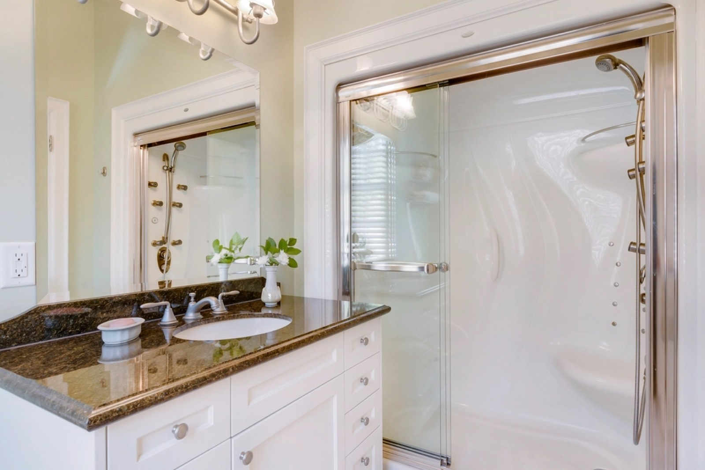

Sauber gemacht. Aus Wolnzach, für die Region.
Schnell und vor Ort
Nach Maß gefertigt
Neue Scheiben für alte Fenster
Für Wohnung und Büro

Für Notfälle so schnell wie möglich, sonst nach Absprache. Ein Foto vom Schaden hilft beim Einschätzen.
Ja. Nach der Besichtigung bekommen Sie ein schriftliches Angebot, ohne Kosten.
Wolnzach und Umgebung – Pfaffenhofen, Mainburg, Geisenfeld, Ingolstadt.